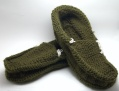
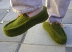

|
||
Premium Patterns Wintry Mix Mitts Love Bytes HawkeyeFree Patterns Kiddie Cadet Summerlin Ruffled Scarf Seamless DS Sock Simply Seamless Pouch Myriads of MushroomsExtras DIY Mitten Blocker Felt Patch Tutorial Yarn Dyeing Tutorial Needle Pouches Knitting Journal |
January 02, 2008 - Posted by Grace SchneblyAnd we're back...You may have noticed that our site was down for a bit. We had a few problems with our hosting service, but everything is back to normal now. I think we’ll have to shop around for a new service, so if you would like to recommend one please do! I’m back in Boston now. I’m sad that vacation is over, but we had a really good visit. It will be nice to get back into the normal swing of things again too. How come no matter how hard I try I can never get anything done while I am visiting someone? I probably only knit 200 stitches while I was there, and I am totally going through withdrawals. However Alice and I have a few Christmas FO’s we still need to post so I’ll start playing catch up right now. But first I would like to thank everyone who has congratulated Si and I and wished us luck! All of your kind words and wishes have really meant a lot to me… now onto the knitting!
Project Specs
It is becoming a bit of a tradition for me to make at least one pair of felted footwear for Christmas. Last year I made a pair of Mowat Mukluks for my sister and this year I made these Felted Moccasins for my dad. I made these mocs a long time ago but couldn’t say anything about them because he is a faithful reader of this site. I knew that he would see them even if I put it below the fold, especially since he likes to check our flickr account too. There was basically no hiding it from him unless I didn’t post them at all, but here they are now and the upside of waiting until after Christmas is that I get to post some modeled pictures! These were pretty easy to make, especially since they used most of the same construction techniques as the mukluks. It seems like most felted slippers are all knit in the same way, and once you’ve made on pair, you’ve made them all! None of the techniques are difficult, and the hardest part of the whole pattern is probably picking up the stitches around the vamp. Like all of Bev’s patterns, the instructions are well written and easy to follow. I love that she included instructions how to make them in a variety of sizes (ranging from Child’s small to Men’s Large). I can only imagine how quickly the smallest size would knit up. I was going to add a leather sole but decided not to after feeling how sturdy the felted double sole was. I am sure that my dad will gets lots of use out of them before they wear out, especially since they’re only meant to be worn around the house. I added the leather ties so he could slightly adjust how they fit around the ankle, plus I think it really gives them a finished look. I used 1/8” suede lace made by the Leather Factory in the Light Rust colorway. I bought it at Jo-Ann (you can also get it at joann.com) and it comes in a pack of 8 yards for about $4.00. In all I probably used less than 1.5 yards so I have plenty left for a pair of moccasins for myself. I kind of wish that I would have used a smooth leather lace instead since the rougher suede since it shed quite a bit while working with it. My dad tried them on immediately once he opened the package and has worn them every day since. He said that they are soft, squishy, and warm, everything you could want in a pair of wool moccasins! I didn’t add anything for traction to the bottom of the foot and luckily he said they weren’t too slick. I am so glad that they fit him perfectly too! They ended up being a very successful gift, and I hope they keep his feet warm during the cold Ellensburg winters. |
   Recent ReviewsRecent Posts
 Our Favorites
|
| © 2007 KathrynIvy.com | ||
{kind=link}
{kind=link}